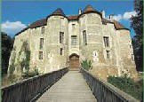

|
Le Pays d'Ouche
La Ferrière sur
Risle
Beaumont le Roger
Bernay
Conches en Ouche
Broglie
Brionne
Harcourt
Retour
Le Pays d'Ouche
Présentation : cliquez...
|
Harcourt :
Le Château et l'arboretum le
plus ancien de France
Domaine d'Harcourt, 12 rue du Château
Tel : 02.32.46.29.70 Fax : 02.32.46.53.38
Saison 2008
: Ouverture le 1er mars 2008
Tel : 02.32.46.29.70 Fax : 02.32.46.53.38
harcourt@cg27.fr
www.cg27.fr
Catherine.flament@cg27.fr
Le domaine d'Harcourt
se compose d'un château des XII et XIIè siècles fortement remanié au XVIIè s,
entouré d'un mur d'enceinte partiellement démentelé et bordé d'un double fossé.
Il s'inscrit dans un arboretum créé au XIXè s par l'Académie d'agriculture de
France, propriéraire du domaine jusqu'en 2000. Véritable patrimoine végétal, il
se compose de 250 espèces d'arbres sur 11 hectares.
Le Château construit
vers 1090 ou 1120 par Robert Ier, sire d'Harcourt, puis remanié à la fin du XIIè
S. par Robert II d'Harcourt, compagnon de Richard Cœur de
Lion. Le donjon central a été élevé au milieu du château par Jean VII,
comte d'Harcourt à la fin du XVIIè S.
Saison 2007
: Nombreuses manifestations du 13 mai au 21 octobre Tel :
02.32.46.29.70 Fax : 02.32.46.53.38
|
 |
Eglise du XIIIè et vieilles halles.
Parc boisé de 100 ha dont l'arboretum
sur 6 ha, rassemblant plus de 200 espèces
d'Europe, d'Asie, d'Amérique, d'Afrique du Nord. Dans la forêt
de 94 ha, nombreux arbres rares et essences exotiques.
Histoire :
Robert II fonda vers 1200 la chapelle de St
Thomas-de-Cantorbery qui fut réunie dans la suite à l'hôpital d'Harcourt.
En 1255, Jean, sire d'Harcourt
et d'Elbeuf fonda près de son château, pour servir de lieu de sépulture à sa
famille, un prieuré conventuel.
Le
9 avril 1695, la mère Agnès-Oriol de Sainte-Agnès est appelée à la direction de
l'hospice d'Harcourt lors de sa fondation par Françoise de Brancas, épouse d'Alphonse-Henri-Charles
de Lorraine, prince d'Harcourt.
|